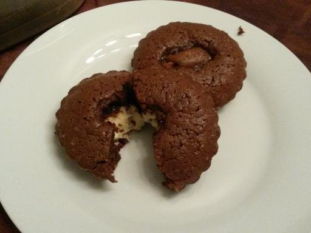

Coulant chocolat pécan
Ingrédients
4×
- 80 g de beurre
- 100 g de chocolat noir
- 50 g de sucre roux
- 30 g de farine
- 2 oeufs
- 4 à 8 carrés de chocolat blanc
- 4 à 8 noix de pécan

Préparation
Étape 1
Fondre 80 g de beurre et 100 g de chocolat noir au micro-ondes, puis fouetter jusqu’à obtenir un appareil lisse et brillant.
Étape 2
Ajouter en fouettant 50 g de sucre roux, puis 30 g de farine et 2 oeufs entiers, jusqu’à obtenir un mélange homogène.
Étape 3
Verser dans des moules individuels (silicone de préférence). Enfoncer au centre de chacun 4 à 8 carrés de chocolat blanc (1 ou 2 par moule) et poser dessus 4 à 8 noix de pécan.
Étape 4
Cuire 10min à 150ºC. Démouler une fois tiède.
Résumé
80 g de beurre
100 g de chocolat noir
Fondre fouetter
50 g de sucre roux
30 g de farine
2 oeufs
4 à 8 carrés de chocolat blanc
4 à 8 noix de pécan
Enfoncer
Cuire 150ºC